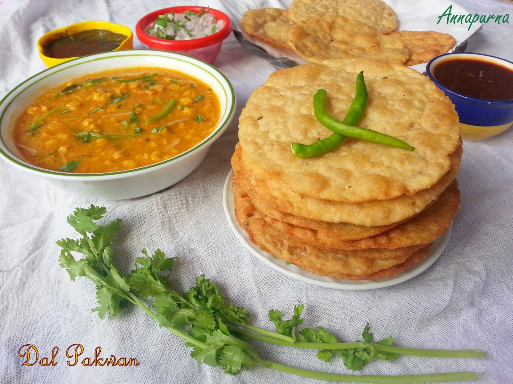

Dal Pakwan

Description
Dal Pakwan is a traditional Sindhi breakfast dish, made with crispy fried flatbread (pakwan) and spicy chana dal (split Bengal gram). It's a perfect mix of crunch and comfort, often topped with chopped onions, tamarind chutney, and green chutney for an explosion of flavors.
This dish is loved for its texture play and balanced spice. Whether it's a lazy Sunday or a special occasion, Dal Pakwan brings joy to the table with every bite.
Ingredients
For the Dal:
- Chana dal (split Bengal gram)
- Turmeric powder
- Red chili powder
- Cumin seeds
- Green chilies
- Salt
- Water
For the Pakwan (crisp flatbread):
- All-purpose flour (maida)
- Cumin seeds
- Carom seeds (ajwain)
- Salt
- Water (for kneading)
- Oil (for deep frying)
For Garnish:
- Finely chopped onions
- Tamarind chutney
- Green chutney
- Fresh coriander leaves
Steps to make:-
Step 1: Prepare the Dal
- Soak chana dal for 1 hour, then pressure cook with turmeric, salt, and water until soft but not mushy.
- In a pan, heat oil and add cumin seeds and green chilies.
- Pour over the cooked dal and mix well. Add chili powder as needed.
Step 2: Make the Pakwan
- Knead a firm dough using flour, salt, cumin, ajwain, and water.
- Roll out flat discs and prick with a fork to avoid puffing.
- Deep fry until golden and crispy. Drain on paper towels.
Step 3: Serve
- Place dal in a bowl or plate.
- Top with chutneys, onions, and coriander.
- Serve with hot, crispy pakwan on the side.
Perfect for breakfast, brunch, or brinner!